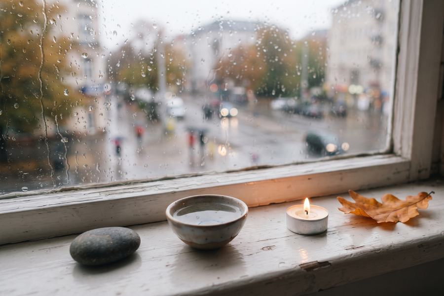
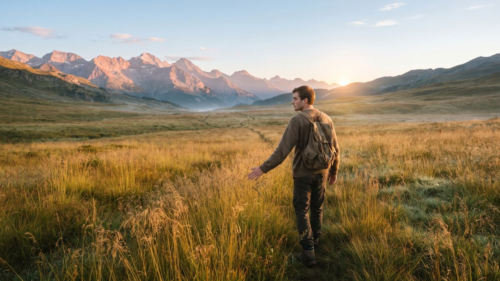

People know the type of work I do, so they reach out to me, and over the years the messages have come to sound alike. A student in a first term away, whose marks are good and whose heart is at home, counting the days. Someone who took a good job in a place where it rains for weeks, who has always taken care of their health and cannot understand why the gray is getting to them. A family that looks from the outside like it has everything in order, and at home, behind the door, is going through the hardest season of its life.
They are beyond success factors, they are life factors, the kind of thing that can take a capable person right off the road they worked so hard to get onto. I have had my own times of missing my family, and I know what a long evening feels like in a place that is not yours yet. So this is what I would say to any of them, and to you, if you sat down across from me. I am a storyteller and a planner, and none of this is medical advice. It is meant to walk beside your doctor and your counselor, and never to take their place.
A hard season is a crossing
Sooner or later most of us leave a place that made us, for a school, for work, or because life carried the family somewhere new. Then one morning you wake up and the mountain is not in the window, the language is not in the kitchen, and nobody around you knows your grandmother's name.
The old ones knew this longing and they did not call it weakness. Every people has moved, with the seasons and with the changes of the world, and I wrote in Stone Breath that the ancestors “did not cling to one piece of land and weep. They learned to carry what mattered.” That is what I want to give you here, a way to carry it. Missing home means you had something worth missing, and the skill, the one a far messenger learns, is to bring a piece of home along and build a place where you are that stays tied to it.
Take a piece of the mountain with you
In Stone Breath this is the practice called The Mountain Within, “For anyone who must leave a mountain, a mesa, a homeland, and carry it with them.” It has three parts, and I will give them to you in the book's own words.
The first comes before you leave. “Go to your place one last time before you leave. Walk it. Touch it. Be silent with it.” Then find a small stone from that place, “Not a piece you break off – one that has already separated naturally, already waiting for you.” Leave something in return, “A few drops of water. A breath of gratitude.” And make the promise, out loud or silently. “I carry you with me. Not as weight – as witness. Wherever I go, you go. I will return when I can. Until then, you are in this stone, and I am in you.”
If you have already left, and there was no time for a goodbye, it is not too late. Bring a stone back from your next visit, or ask someone at home to send you one.
The second part is where you land. Choose one spot, “A corner of your home. A windowsill. A shelf. A small table.” The book says to place there “your stone (anchor), a bowl of water (dew, rain), a small light (sun), and a natural object from your new place.” Do not skip that last one. You are not hiding from where you are. You are introducing two places to each other.

The third part is the one that keeps you whole, and it takes two minutes. “Each morning, touch your stone. Close your eyes. Breathe three times. See the place in your mind. Let it hold you. Then go.”
Does a stone on a windowsill sound too small for what you are feeling? Here is what the book says about Tonas, the runner in the story, who carried a stone from the mesa. “He did not use it to pretend he was somewhere else. He used it to remember who he was.” And then the two lines I most want you to keep.
“You are not leaving your sacred ground. You are learning to carry it.”
The stone is one piece of home. There are others, and you should have several. The food, cooked on a set night of the week, even badly. A song from home played while you get dressed. Your language, spoken out loud on a call that happens on the same day every week so you can lean toward it. A photograph of the land. What matters is that it is regular, a thread you touch every day.
When the sky stays gray
Now for the one living under cloud and rain. First, you are not imagining it and you are not being weak. People who study this say that feeling lower in the short dark days is common, and for some people it goes further and becomes a real seasonal depression that deserves real care.
- Get outside in the morning, every day, even when it is overcast. A cloudy sky is still far brighter than the lights in your room, and doctors advise outdoor light even on cold or cloudy days, most of all in the first couple of hours after you get up. Walk to work the long way, and put your desk or your chair by the window.
- Move your body every day. Walk, run, swim, dance in the kitchen, it all counts, and if you can do it outdoors you have done two things at once.
- Keep steady hours. Go to bed and get up at about the same time each day, weekends too, and keep the phone out of the last hour of the night.
- Stay with people. The gray makes you want to cancel, so make plans that are hard to cancel, a standing meal, a class, a team, a walk with a neighbor.
- Ask your doctor about a light box and about vitamin D. Light boxes made for this are bright, 10,000 lux, and are usually used for about half an hour in the morning, and many people find they help. Check with a doctor first, because they are not right for everyone, especially with some eye conditions and some medicines. It is the same with vitamin D. Some people in dark places run low, the research on taking it is mixed, and it can interact with other medicines, so have it checked instead of guessing.
And if the low mood stays for weeks, if you are sleeping far more than usual, pulling away from people, losing interest in what you love, go and see a doctor. This is common and it is treatable.
Then set your stone by the window, where the light you do have falls on it. The mountain you carry has sun on it.
The breath walks beside your care
Some of you reading this live with anxiety, and some of you are working with a doctor or a counselor, and may be taking medicine that helps. Good. Stay with that. Breathing practice is a companion to that care and it never replaces it, and you should never stop or change a medication on your own. I teach the breath because it is something you can do tonight, with no appointment.
It is the stone breath, and it came down in my family from a champion runner, Masan's father, the runner I call Keh Yazh in my books. The stone stays in your hand. It never goes in your mouth. You only imagine it resting on your tongue, and as the book says, “notice what your body does to hold it there: the jaw goes soft.” Then breathe in for four counts. Hold for four. Breathe out slow for six. Hold for four. Five rounds.
When the breath out is longer than the breath in, the heart slows, the body hears that it is safe enough to think, and the thinking mind comes back. The studies on slow breathing have found the same. Notice what the breath does not do. The hard thing is still there afterward. What changes is the one carrying it. A hard day is weather. It is not a verdict, and weather passes.
A caution, as your older brother. If slow breathing ever makes you feel worse, dizzy or more panicked, stop, breathe normally, and mention it to your doctor or counselor. They can help you find the way that fits you.
Hang in there. It gets better.
To the student who wants to pack up and go home. Let me tell you first that what you feel is ordinary, and I mean that as comfort. People who work with students say nearly everyone feels homesick in the first weeks away, and that it tends to be sharpest in the first term. It says nothing about whether you belong there. It is love, with nowhere to go at nine o'clock on a Tuesday night.
I have had times when I missed my family, and what I learned is not fancy. Hang in there. Hang in there, it will get better.
So here is an elder brother's advice. Do not make the big decision in the lowest hour. Late at night, tired, after a hard call home, is no time to decide your next four years. Make it small. Can you get to Friday? Can you get to the next break? Finish the term you started, when you are able to, and then go home for the break with your head up, eat everything, sleep, sit with your grandmother, and decide the next step from a rested place, with your family.
In the meantime fill the hours that hurt. The lonely feeling grows in a closed room, so be where people are at the hour it comes, the library, the gym, a club, a meal with one person from your hall. Keep a routine. Call home on set days, so that home is something you look forward to, and so you are not on the phone every time you feel bad.
I will add this, because I do not want my words to become a weight. Hanging in there never means suffering alone or in silence, and it never means ignoring your health. If you are struggling to eat, to sleep, to get through the day, tell the campus counseling center and your doctor now. They see this every week and they know what to do. And if you, your family and your doctor decide together that home is where you need to be for a while, that is a decision made with care and there is no shame in it. The road dips and keeps climbing.
Families, come part of the way
Now I am talking to the mothers and fathers, the aunties and uncles and grandparents, because the families need to help too. The families need to come part of the way.
When your young person calls in tears, every part of you wants to say come home, we will come get you tonight. It is love. Unless there is real danger, try something else first. Listen, all the way through, without fixing. The people who work with students say listening is the best thing a family can do. Then tell them you are proud, that missing home is normal, and that you are right here.
Set a regular time to talk, and keep it like an appointment. A call they can count on steadies a young person more than ten calls made in a panic.
Then go part of the way toward them. Visit them where they are and let them show you around their new place, so that it becomes a place the family has stood in. Mail the stone. Mail the food. Send the photograph of the sheep, the dog, the garden, the kitchen. Tell them the news from home that is good, and let them know the home fire is fine and is not waiting on them to come tend it. A young person who believes the family is all right can settle. One who believes the family is falling apart without them cannot.
And know when to step in. If you see big, lasting changes, in sleep, in eating, in how they talk, or if they say anything about harming themselves, act right away. Call the campus counseling service or the dean of students, and use the numbers below. Coming part of the way includes that too.
When the hard season is inside the house
Last, the family that is suffering behind an accomplished front. I will say only a little, because every family's season is its own.
A hard season does not take back anything you have built or earned. But success can make it harder to ask for help, because people assume you are fine, and after a while you help them assume it. The old teaching goes the other way. In Stone Breath it is called the headlamp circle, after runners who came out in the dark with their lamps to walk a tired runner through the last hard miles of a long race. “Let yourself be carried. This is the harder practice. Most of us know how to give. Fewer of us know how to receive. When the headlamps form around you, do not apologize for needing them. Walk in the middle. Let them light your way.”
So tell one person the truth this week. Bring in the ones whose work this is, a doctor, a counselor, a family therapist, a spiritual elder you trust.
And if you are the friend or the relative on the outside, the book speaks to you too. “When someone you love is in the dark hour – a hospital, a heartbreak, a long race, a hard transition – do not ask if they need anything. Just go. Carry water. Carry frybread. Carry silence. Carry your own headlamp.” You do not need the right words. Bring soup and sit down.
Watch it, and breathe along
I made a short film series from this teaching, called The Mountain Within, with pictures of the land and two voices to guide the breath, so that you do not have to do it alone or from a page.

Part OneTake a Piece of the Mountain With You · Leaving Home Part TwoKeep the Stone Close · The Hard Day, with the five rounds counted with you
Part TwoKeep the Stone Close · The Hard Day, with the five rounds counted with you
 Part ThreeA Good Relationship With Stress
Part ThreeA Good Relationship With Stress
The article this one goes with, on the eight daily practices that rebuilt my confidence, is Returning Is the Skill.